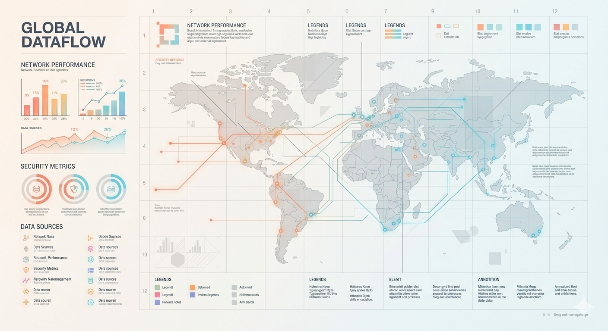

RowdyQL · 01 / 12
כל מערכת שהשתמשתם בה היום יושבת על טבלאות.
rowdyql.comמכאן מתחילים
גריד שקט, משטחים שטוחים ומאט, וגרדיאנט שמופיע איפה שיש לו מה להגיד. הזוהר מסמן רק נתון שחשוב, והלימוד קודם לקונספט.

חמשת גווני המותג משמשים לקישוט, לגרפים, לגוונים של טבלאות ולזוהר. לכל אחד שלוש דרגות: רכה, קו (ניגודיות 3 ומעלה) וטקסט (4.5 ומעלה). ברקע כהה הגוונים הרכים עוברים לבד.
שמורים רק לסימון, אף פעם לא לקישוט, כדי שכשהם מופיעים ברור מיד מה הם אומרים. האלמוג של המותג לא משמש לשגיאה, והירוק והאדום לא משמשים לקישוט.
רקע הוא גוון אחד שמתבהר לאוף-וויט, לא חובה זריחה וים יחד. כל אחד מתאים לפוסט, לשקף או לשער. השילוב המלא, מחם לקר, שמור לרגעים שבהם הוא מספר את הסיפור, למשל מקור ותוצאה באותו מסך. על כל הרקעים הטקסט נשאר מעל 8.7, והטקסט המשני מעל 4.5.
ב-SQL אומרים מה רוצים לקבל, לא איך להגיע לזה. בגלל זה קוראים לה שפה הצהרתית. באיזה סדר לעבור על הטבלאות, איפה לסנן ואיך לצרף - את כל זה מנוע בסיס הנתונים מחליט לבד.
הטקסטים לקוחים מהאתר ומפרופיל הקול המאושר. בשיעור, טבלת התשובה בכחול, ועליה סימוני הבדיקה.
בוחרים שורות לפי תנאי. מה שלא עומד בתנאי נשאר בחוץ.
| id | name | year | city |
|---|---|---|---|
| 1 | Noa | 1 | Ariel |
| 2 | Itai | 3 | Haifa |
| 3 | Maya | 2 | NULL |
| 4 | Omer | 1 | Eilat |
| 5 | Shira | 4 | Ariel |
| id | name | year | city | |
|---|---|---|---|---|
| 2 | Itai | 3 | Haifa | ✓ |
| 3 | Maya | 2 | NULL | ! |
| 4 | Omer | 1 | Eilat | ✕ |
| 5 | Shira | 4 | Ariel |
כל צורה לקוחה מהתמונה ומקבלת משמעות מעולם הקורס. הגריד הממוספר ירד.
בוחרים מצב לפי השאלה שהגרף עונה עליה. לא מכריחים מעבר מחם לקר בכל גרף.
תרשים צריך להיקרא קודם כל. צבע מתחלף רק כשיש לזה הצדקה, למשל הקו שמגיע לתוצאה. הקונספט לא נכפה בכל מקום.
סביב נקודת נתון, קו פעיל או התקדמות. אף פעם מאחורי טקסט, ובהדפסה הוא כבוי. בכהה הוא חזק יותר.
חם הוא המקור, קר הוא התוצאה. הוא חי בפסים, ברקעים ובטבעת, לא בכל קו ובכל עמודה.
ירוק לנכון, ענבר להערה, אדום לשגוי או אסור, כחול לנבחר. לא משתמשים בהם לקישוט, וגווני המותג לא משמשים למצבים.
ברירת המחדל לרקע היא גוון אחד שמתבהר לאוף-וויט. זריחה וים יחד רק כשבמסך יש מקור ותוצאה.
הבלטה כשדבר אחד או כמה בודדים חשובים. השוואה כשכל הקטגוריות חשובות. רצף כשהערכים מסודרים מקטן לגדול.
5% בלבד, תמיד בהיר יותר מקווי הטבלה. בלי מספרים ובלי קואורדינטות.
קווקוו ב-14% של הדיו. רואים שהתא ריק, אבל הוא לא צועק.